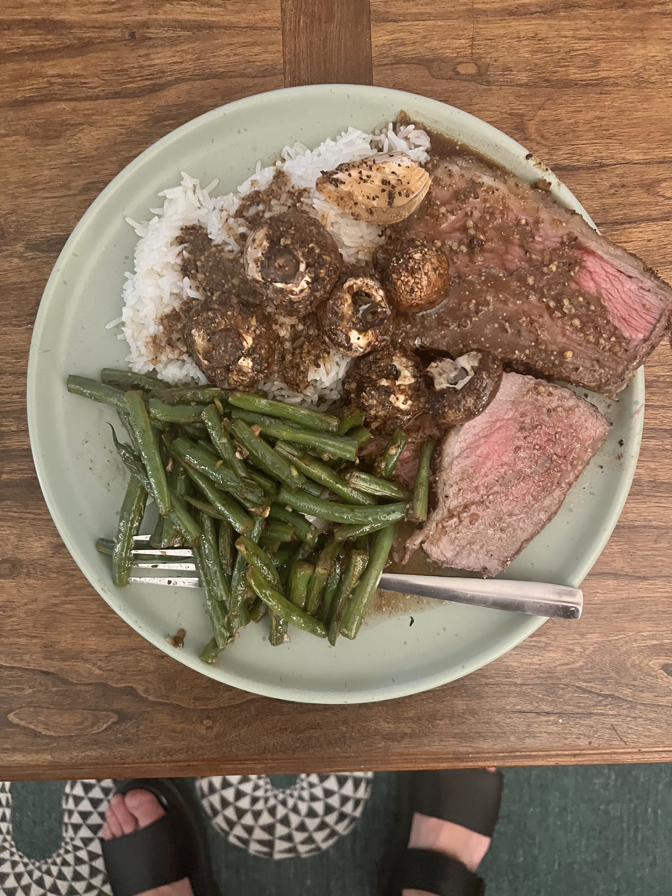

Deirdre's Rump Roast (Coco's Version)

Description
This is a rump roast cooked rare with a balsamic
dijon vinagrette that makes a delectable jus gravy,
caramelized onions, and mushrooms. It is a popular dish
in the Provosty and Guillot families and has even caught
the eye of world reknown chef Emeril, who once asked Deirdre
for the recipe after samping the dish at a friend's
engagement party.
This is Coco's version of the dish which holds an addition of whole grain mustard.
The dish is best served along with rice, to soak up the delicious gravy!
Tools
- 16 oz bottle or jar to hold dressing
- Kitchen scale
- Tablespoon
- Citrus juicer
- Baking pan with high walls
- Oven
- Chef knife for chopping and carving
- Carving board with wells (to catch jus)
- Carving fork
Full Ingredients
- 2 Tablespoons of Garlic and Herb Seasoning
- 240ml Balsamic Vinegar
- 160ml Evoo
- 30g (1.5 tbsp) of whole grain mustard
- 30g (1.5 tbsp) of dijon mustard
- 20g (1 tbsp) of honey
- 1 Fresh Lemon or 3 tbsp of lemon juice
- Worcestershire Sauce
- Montreal Steak Seasoning
- A Rump Roast between 3lbs and 5lbs
- 2 Onions
- 8oz Crimini/Button Mushrooms
- Beef Stock
Mis en Place
The Oven
- Preheat the oven to bake at 325°F or 160°C.
The Balsamic Dijon Vinaigrette
- Gather the ingredients.
- 2 Tablespoons of Garlic and Herb Seasoning
- 240ml Balsamic Vinegar
- 160ml Evoo
- 30g (1.5 tbsp) of whole grain mustard
- 30g (1.5 tbsp) of dijon mustard
- 20g (1 tbsp) of honey
- Combine the ingredients in a 16oz bottle and shake.
Chopping
- Slice and juice lemon.
- Quarter 2 onions.
- If the mushrooms are large, slice mushooms in halfs or quarters.
The Roast
- Place the roast fat side up in the baking pan.
- Break the onions inside halfs out and place around the roast.
- Place the mushrooms around the roast and onions.
- Pour the lemon juice on the meat and let it settle.
- Coat the meat evenly with Worcestershire and let it sit, make sure to get some on the onions and mushrooms.
- Coat the meat, onions, and mushrooms with the balsamic viniagrette. The meat should have a nice layer of mustard grains resting on the fat.
- Top the fat with a thick layer of montreal steak seasoning.
- Place the baking pan in the center of your oven and roast for 20 minutes per pound to have a perfectly rare roast.
- When the roast is done take it out of the oven and cover it with aluminum foil to rest for 5-10 minutes.
Finishing the Gravy
- Remove the Roast from the baking pan and place on a carving board with wells to catch the drippings and juice.
- Evaluate the jus left in the baking pan, if you want more gravy per person or to dilute the brightness of the viniagrette, add beef stock as desired.
Carving the Roast
- The best way to carve is to slice the roast against the grain. A helpful way to determine the grain is to cut your taste.
- Cut a tip of the corner of the fat for a taste (yes, this is the best part). If you are generous, call out and invite your friends or family for a taste.
- Once you have determined the correct grain, slice the roast to desired thickness. Make sure there are at least 2 pieces available for everyone to eat.
- If you are planning for leftovers, eat the more cooked parts first so the leftovers can still be rare after they are reheated.
Enjoy!
Storing Leftovers
- The meat is easiest sliced fresh, slice meat to your desired thickness before storing in the fridge.
- The rarest bits are the best to store cold because you can pan fry, air fry, or microwave them and they will remain rare.
- For travel meat snacks, best practice is to store the meat soaked in the gravy so it soaks in all the good good.
Home